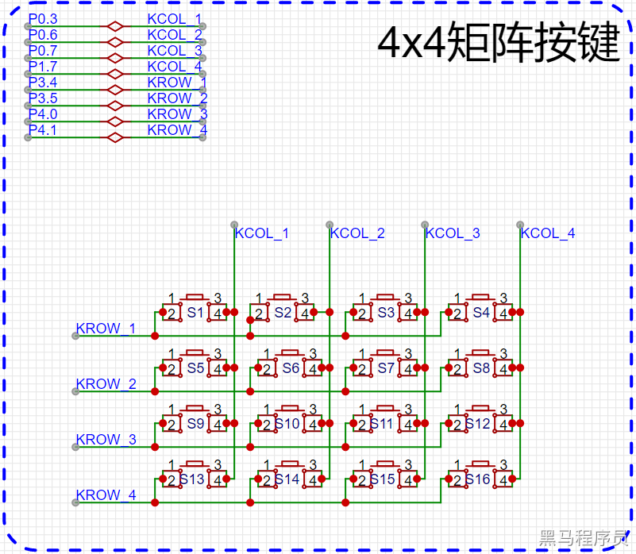
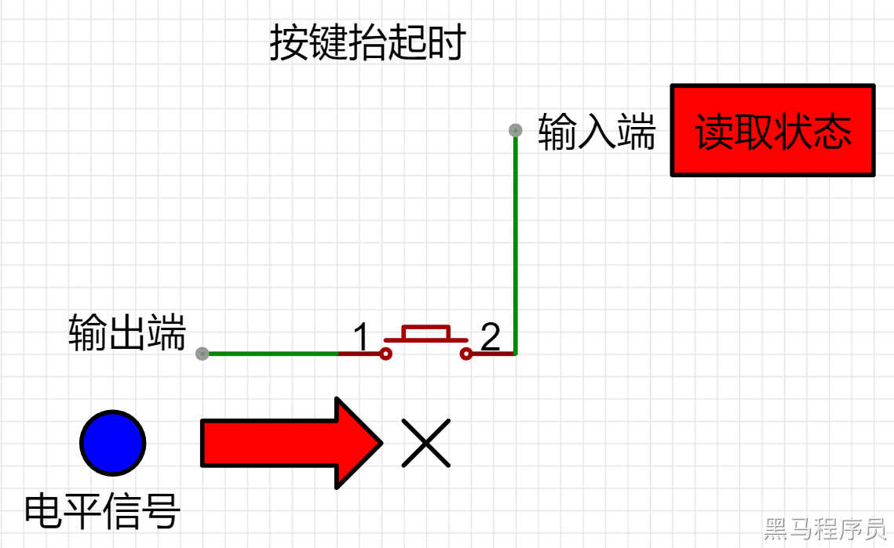
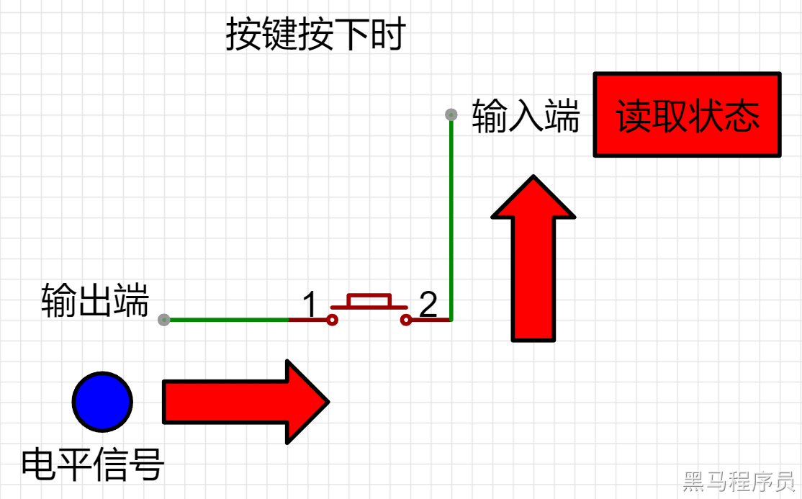
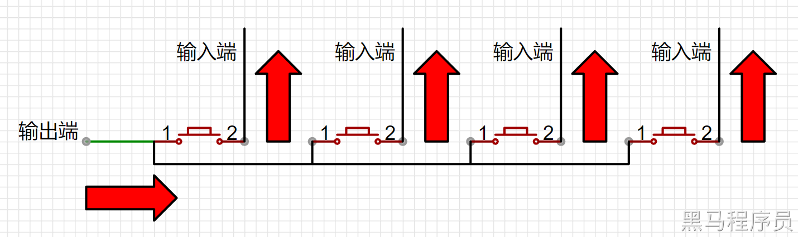
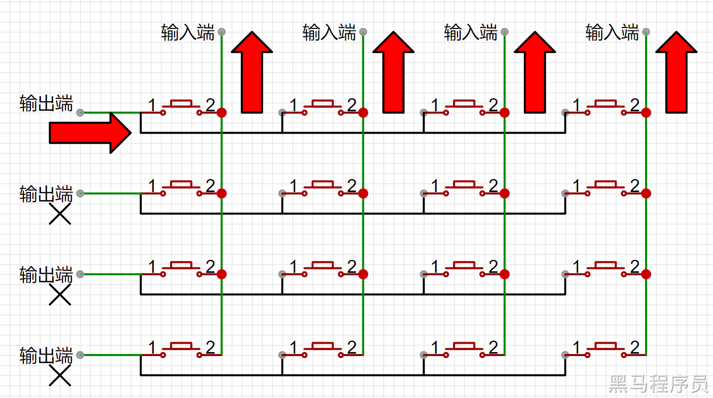
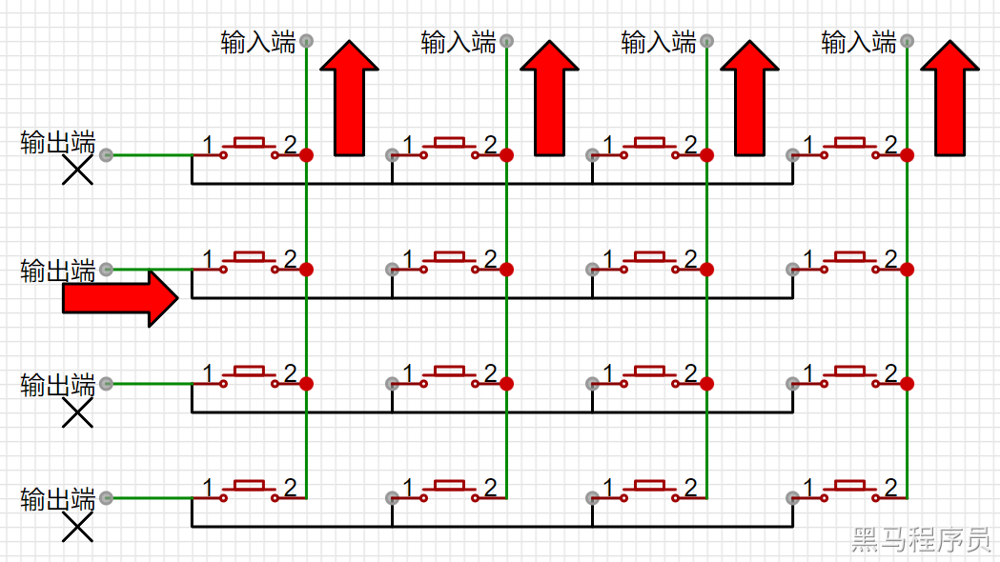
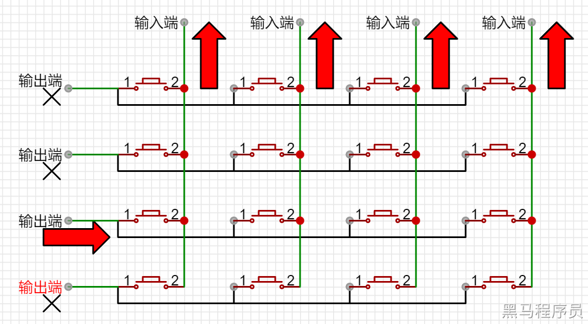
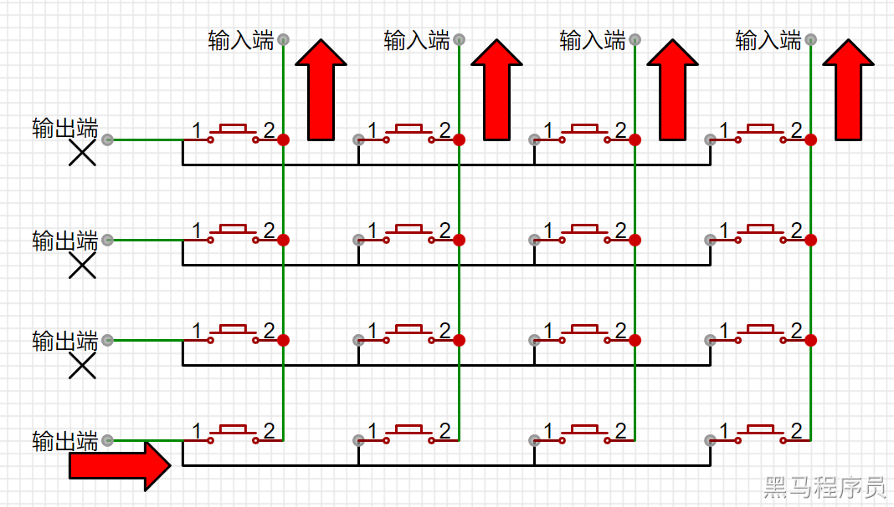

<!DOCTYPE lake>
<h2 data-lake-id="EDiMc" id="EDiMc"><span data-lake-id="uf29fa17a" id="uf29fa17a">学习目标</span></h2><ol list="u5455d58c"><li data-lake-id="u8f2da4f6" fid="ue12ff685" id="u8f2da4f6"><span data-lake-id="u9d3ec6b8" id="u9d3ec6b8">了解矩阵键盘的原理和基本结构</span></li><li data-lake-id="u535903e2" fid="ue12ff685" id="u535903e2"><span data-lake-id="ue322ee05" id="ue322ee05">学会矩阵键盘的按键扫描方法</span></li><li data-lake-id="uaa81a736" fid="ue12ff685" id="uaa81a736"><span data-lake-id="u4e7ce4f0" id="u4e7ce4f0">学会矩阵键盘的编程实现</span></li></ol><h2 data-lake-id="UMsGQ" id="UMsGQ"><span data-lake-id="ufc02acde" id="ufc02acde">学习内容</span></h2><h3 data-lake-id="fzARH" id="fzARH"><span data-lake-id="u7f89cb0d" id="u7f89cb0d">矩阵按键</span></h3><p data-lake-id="u6ff334e7" id="u6ff334e7"><span data-lake-id="ufdb40f2f" id="ufdb40f2f">矩阵键盘是一种常见的数字输入设备，由多行多列的按键组成。每个按键都有一个唯一的行列坐标，通过行列坐标可以确定按键的编号，从而实现对数字或字母的输入。</span></p><h3 data-lake-id="aSQ8r" id="aSQ8r"><span data-lake-id="uadd4b72b" id="uadd4b72b">原理图</span></h3><p data-lake-id="uf30389b5" id="uf30389b5"></p><p data-lake-id="u901025f8" id="u901025f8"><span data-lake-id="u23c68675" id="u23c68675">矩阵键盘的基本结构包括按键、行引脚和列引脚。按键一般是机械按键或触摸按键，行引脚和列引脚分别与矩阵键盘的行和列相连，用于检测按键的输入状态。</span></p><h3 data-lake-id="YFcMk" id="YFcMk"><span data-lake-id="u8107a394" id="u8107a394">按键状态检测</span></h3><h4 data-lake-id="rIFmj" id="rIFmj"><span data-lake-id="ue5c048c4" id="ue5c048c4">单个按键状态检测</span></h4><p data-lake-id="u054d6bbf" id="u054d6bbf"></p><ul list="u40dfe0f9"><li data-lake-id="ub0161598" fid="u40aa6c86" id="ub0161598"><span data-lake-id="u4b0847c4" id="u4b0847c4">输出端的电平</span></li><li data-lake-id="u5ae79a36" fid="u40aa6c86" id="u5ae79a36"><span data-lake-id="u2922f49b" id="u2922f49b">输入端的状态</span></li><li data-lake-id="u37a9214f" fid="u40aa6c86" id="u37a9214f"><span data-lake-id="u5947163a" id="u5947163a">按键抬起</span></li></ul><p data-lake-id="u8efb9cbe" id="u8efb9cbe"><span data-lake-id="u7a44f37b" id="u7a44f37b">通过按键抬起时的状态，我们分析输入端的电平信号，来确定抬起时输入端的默认电平状态。</span></p><p data-lake-id="u8b3d65e2" id="u8b3d65e2"></p><p data-lake-id="u0809683b" id="u0809683b"><span data-lake-id="u953ba820" id="u953ba820">通过按键按下时的状态，我们分析输入端的电平信号，来确定按下时输入端的默认电平状态。</span></p><p data-lake-id="ud950ca64" id="ud950ca64"><span data-lake-id="u189bd26b" id="u189bd26b">通过分析确认，默认输出端和输入端都是高电平；</span></p><ul list="ue073f7d6"><li data-lake-id="u5c323b74" fid="ub1f251d5" id="u5c323b74"><span data-lake-id="u1c6fcb2c" id="u1c6fcb2c">当输出端输出</span><strong><span data-lake-id="ua84f28f0" id="ua84f28f0">低电平(接GND)</span></strong><span data-lake-id="u7d021de5" id="u7d021de5">时，</span></li></ul><ul data-lake-indent="1" list="ue073f7d6"><li data-lake-id="u2cba42f1" fid="ub1f251d5" id="u2cba42f1"><span data-lake-id="u0c671300" id="u0c671300">若输入端读到</span><strong><span data-lake-id="u3cbea011" id="u3cbea011">高电平</span></strong><span data-lake-id="u860fbef1" id="u860fbef1">，则开关为</span><strong><span data-lake-id="ue68a89c5" id="ue68a89c5">抬起</span></strong><span data-lake-id="u569ed165" id="u569ed165">状态；</span></li><li data-lake-id="ub736c3ce" fid="ub1f251d5" id="ub736c3ce"><span data-lake-id="u793002ec" id="u793002ec">若输入端读到</span><strong><span data-lake-id="uefcf81c9" id="uefcf81c9">低电平</span></strong><span data-lake-id="ueafa40a6" id="ueafa40a6">，则开关为</span><strong><span data-lake-id="u6617b066" id="u6617b066">按下</span></strong><span data-lake-id="ue0ac49ab" id="ue0ac49ab">状态；</span></li></ul><p data-lake-id="u609033fc" id="u609033fc"><span data-lake-id="u5a8dca49" id="u5a8dca49">​</span><br/></p><h4 data-lake-id="C8kq6" id="C8kq6"><span data-lake-id="uaa13f7d5" id="uaa13f7d5">单行按键状态检测</span></h4><p data-lake-id="u5b96099e" id="u5b96099e"></p><p data-lake-id="u6f0ace63" id="u6f0ace63"><span data-lake-id="ufaaa13fb" id="ufaaa13fb">通过逐一检测输入端的状态，来判断按键是否按下。</span></p><p data-lake-id="u72e9eacf" id="u72e9eacf"><span data-lake-id="ued129efc" id="ued129efc">​</span><br/></p><h4 data-lake-id="u2wCT" id="u2wCT"><span data-lake-id="ue2d6d08f" id="ue2d6d08f">多行按键状态检测</span></h4><p data-lake-id="u2232895e" id="u2232895e"></p><p data-lake-id="u97e6a44f" id="u97e6a44f"><span data-lake-id="ub0b10a6f" id="ub0b10a6f">首先，将第一行输出</span><strong><span data-lake-id="u80f01ed0" id="u80f01ed0">低电平</span></strong><span data-lake-id="ue37e93cd" id="ue37e93cd">，其余行设置为</span><strong><span data-lake-id="u77eab8c6" id="u77eab8c6">高电平</span></strong><span data-lake-id="u89bd336e" id="u89bd336e">。目的是为了只测试第一行的按键状态。</span></p><p data-lake-id="uf207df02" id="uf207df02"></p><p data-lake-id="u5b819165" id="u5b819165"><span data-lake-id="uadba07bc" id="uadba07bc">然后，将第二行输出</span><strong><span data-lake-id="ud085ea12" id="ud085ea12">低电平</span></strong><span data-lake-id="u2f96ac2b" id="u2f96ac2b">，其余行设置为</span><strong><span data-lake-id="u77242172" id="u77242172">高电平</span></strong><span data-lake-id="u1f3c9f87" id="u1f3c9f87">。目的是为了只测试第二行的按键状态。</span></p><p data-lake-id="u9f8a0e54" id="u9f8a0e54"></p><p data-lake-id="uee3b033f" id="uee3b033f"><span data-lake-id="u4485c56b" id="u4485c56b">接着，将第三行输出</span><strong><span data-lake-id="ue834413c" id="ue834413c">低电平</span></strong><span data-lake-id="ue5f71a98" id="ue5f71a98">，其余行设置为</span><strong><span data-lake-id="ue1c98bf8" id="ue1c98bf8">高电平</span></strong><span data-lake-id="ub51e7eb6" id="ub51e7eb6">。目的是为了只测试第三行的按键状态。</span></p><p data-lake-id="ude5e7dbf" id="ude5e7dbf"></p><p data-lake-id="u92504c34" id="u92504c34"><span data-lake-id="ue5015e3d" id="ue5015e3d">最后，将第四行输出</span><strong><span data-lake-id="u47e8ca3e" id="u47e8ca3e">低电平</span></strong><span data-lake-id="u9d48dcc2" id="u9d48dcc2">，其余行设置为</span><strong><span data-lake-id="u580125b2" id="u580125b2">高电平</span></strong><span data-lake-id="u7a9720ca" id="u7a9720ca">。目的是为了只测试第四行的按键状态。</span></p><p data-lake-id="u920d33e8" id="u920d33e8"><span data-lake-id="u15a7640a" id="u15a7640a">​</span><br/></p><h3 data-lake-id="JiOMR" id="JiOMR"><span data-lake-id="u043307fb" id="u043307fb">状态记录</span></h3><p data-lake-id="u15de7232" id="u15de7232"><span data-lake-id="u74a51dc2" id="u74a51dc2">通过自定义状态来记录按键状态</span></p><span class="yuque-card-unsupported">[codeblock]</span><h3 data-lake-id="qh7xQ" id="qh7xQ"><span data-lake-id="uccdcc803" id="uccdcc803">状态优化</span></h3><p data-lake-id="u0ca5c939" id="u0ca5c939"><span data-lake-id="ufdf83afb" id="ufdf83afb">通过</span><code data-lake-id="uf41f9723" id="uf41f9723"><span data-lake-id="ub51c9223" id="ub51c9223">define</span></code><span data-lake-id="u4a7dfc9d" id="u4a7dfc9d">优化一些数值的操作，方便在后续看代码时方便理解，提高代码的阅读性。</span></p><span class="yuque-card-unsupported">[codeblock]</span><h3 data-lake-id="Avsse" id="Avsse"><span data-lake-id="udf0b0d0e" id="udf0b0d0e">循环优化</span></h3><p data-lake-id="u0dc32b06" id="u0dc32b06"><span data-lake-id="u39f7dcb7" id="u39f7dcb7">操作的按键众多，通过循环的方式来操控每一个按键，减少代码量，方便维护。</span></p><span class="yuque-card-unsupported">[codeblock]</span><h2 data-lake-id="C3ixZ" id="C3ixZ"><span data-lake-id="u66a47ece" id="u66a47ece">练习题</span></h2><ol list="u4284191d"><li data-lake-id="u3a1cc2d9" fid="ufeeddf1e" id="u3a1cc2d9"><span data-lake-id="uc8bb583f" id="uc8bb583f">按键扫描检测</span></li><li data-lake-id="u04f806af" fid="ufeeddf1e" id="u04f806af"><span data-lake-id="ub90f67be" id="ub90f67be">优化按键状态扫描</span></li><li data-lake-id="ue12a0936" fid="ufeeddf1e" id="ue12a0936"><span data-lake-id="u4c01a3d2" id="u4c01a3d2">驱动封装</span></li></ol><p data-lake-id="u3eb63175" id="u3eb63175"><br/></p>